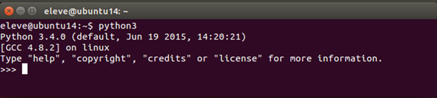
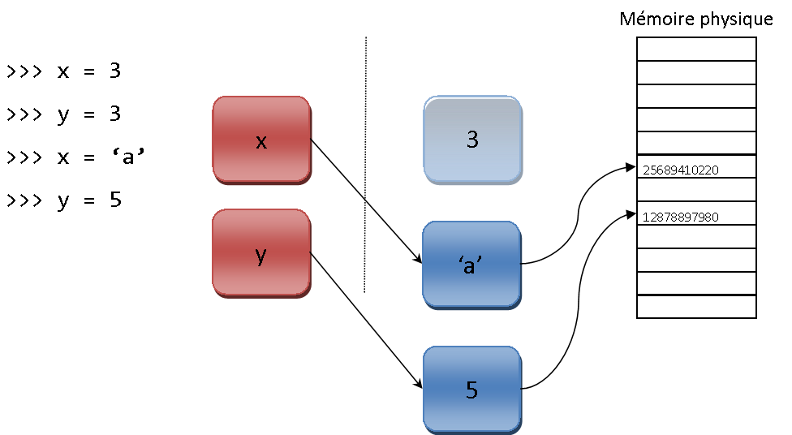

Même salle pour tous les cours, mais les intervenants tournent
Introduction
Histoire de Python
80-90 : Guido van Rossum / Langage ABC
invite de commande interractive avec mémoire
pas de point virgule, indentation
1991 : première version de Python (0.9.0)
1995 : version 1.2
2000 : version 2.0
2008 : version 3.0 (rectification de défauts du langage)
2010 : version 2.7
2015 : version 3.5
Distribution de Python
Python Software Fundation
Licence LGPL (Lesser GNU Public License)
Utilisation sans restriction
Y compris usages commerciaux
Caractéristiques du langage
Python est...
Ni interprété, ni compilé
Orienté objet et fonctionnel
A typage dynamique fort
Associable
Un langage de haut niveau
Facile à lire et à écrire
Usages de Python
Scripts métier
Calculs scientifiques
Applications bureautiques
Extensions
Jeux vidéo
Web
Exécution d'un programme
Processus d'exécution
Code source compilé en bytecode
Bytecode exécuté par la machine virtuelle Python
Fonctionnement de l'interpréteur Python
Interpréteur Python
Programme écrit en C le plus souvent
Plusieurs versions possibles sur un même ordinateur
En pratique
En ligne de commande
python
py -2
python script.py
Sous windows
double clic sur script.py
Environnements de développement
Invite de commande interractive
IDLE
IDE : PyScripter, PyCharm, PyDev...
Notebook Jupyter
Environnements de développement
Invite de commande interractive
Environnements de développement
Fenêtre d'IDLE
Environnements de développement
Environnement de développement PyCharm
Types et opérations
Variables
1 variable = 1 nom + 1 valeur
Règles de nommage
Lettes, chiffres et blancs soulignés
Pas d'espace, accent, caractère spécial
Sensible à la casse
Convention
mon_nom_de_variable
Mots réservés
and asassertbreakclasscontinuedefdelelifelseexcept false finallyforfromglobalifimport in is lambda none nonlocal not or
passraisereturn true trywhilewithyield
Types et variables
Typage dynamique fort
Typage fort
Type derrière chaque variable
Opérations cohérentes avec le type
Typage dynamique
Type d'une variable modifiable au cours du programme
En pratique...
Pas de déclaration des types
Détections par l'interpréteur
Associé à la valeur référencée par la variable
Affectation
Processus d'affectation en Python
Types et variables
Conséquences
Impossible de déclarer une variable sans lui affecter une valeur
Types associés aux objets référencés
Type d'une variable = type de l'objet référencé
Affectations et mémoire
Ramasse-miettes Python
Affectations et mémoire
Ramasse-miettes Python
Affectations et mémoire
Ramasse-miettes Python
Affectations en Python
Affectation simple
>>> a = 2
>>> a
2
Affectations parallèles
>>> a, b = 2, 5
>>> a
2
>>> b
5
Affectations multiples
>>> a = b = c = 4
>>> a
4
>>> b
4
>>> c
4
Types de base
Types de base ou types intégrés
Type
Exemple de valeur
Nombre
3, 1.1456, -3.5
Chaîne de caractères
'mot', 'petit texte'
Liste
[1, 2, 3], ['a', 'b'], ['a', 5, 2.3, 'f']
Tuple
(1, 3), ('a', 'b', 14)
Ensemble
set('abc'), {'a', 'b', 'c'}
Dictionnaire
{'a': 3, 7: 'b'}
Fichier
open('fichier.txt')
Booléen
True, False
Rien
None
Types numériques
Type
Exemple de valeur
Integer
2, -3, 156235789
Float
2.3, -4.12, 1.0, 189489.23891
Complex
2+3j
Decimal
Decimal('0.1')
Fraction
Fraction(1, 3)
Opérations sur les numériques
Opérations classiques
Addition +
Soustraction -
Multiplication *
Puissance **
Division /
Division entière //
Reste d'une division entière (modulo) %
Les nombres entiers et réels
2 types distincts
>>> a = 3
>>> type(a)
<class'int'>
>>> b = 3.0
>>> type(b)
<class'float'>
Conversion automatique vers le plus "complèxe"
>>> a = 3 + 2.18
>>> a
5.18
>>> type(a)
<class'float'>
Les nombres entiers et réels
int() et float() pour convertir
>>> a, b = 14, 4
>>> c = a % b
>>> c
2
>>> d = float(c)
>>> d
2.0
Les booléens
True ou False
Surcouche des entiers 0 et 1
Résultats des opérations logiques
Opérateur
Signification
<
Inférieur
>
Supérieur
>=
Supérieur ou égal
<=
Inférieur ou égal
==
Egal
!= ou <>
Différent de
is
Objet identique
is not
Objet différent
Les booléens
Exemple 1
>>> True + 23
Exemple 2
>>> x = (3 != 5)
>>> x
True
Le type Rien
None
Référence l'objet rien
>>> x = None
>>> type(x)
<class'NoneType '>
Les séquences
Catégorie de structures avec des propriétés communes
itérable : retourner les éléments qui la compose les uns à la suite des autres
indexable : retourner n'importe lequel de ses éléments sans avoir à la parcourir en entier
2 grandes catégories
séquence immuable (= non modifiable)
séquence mutable (= modifiable)
3 types basiques
liste
tuple
range
Opérations sur les séquences
Opération
Signification
s + t
concaténation de s et t
s * n
concaténer n fois s à elle-même
s[i]
élément à la i-ème position
s[i:j]
sous-séquence de s, de la i-ème à la j-ème position
s[i:j:k]
sous-séquence de s, de la i-ème à la j-ème position avec un pas de k
len(s)
nombre d'éléments de s
min(s)
plus petit élément de s
max(s)
plus grand élément de s
sum(s)
somme des éléments de s
x in s
x est dans s
x not in s
x n'est pas dans s
s.index(x)
position de la première occurence de x dans s
s.count(x)
nombre d'occurrences de x dans s
Les tuples
Tableaux non modifiable d'objets de n'importe quel type
Séquences immuables
Syntaxe :
>>> t = elem1, elem2, elem3...
Pour faciliter la lecture : utilisation de parenthèses
>>> t = (elem1, elem2, elem3...)
Séquence vide : s = ()
Séquence de un élément : s = elem, ou s = (elem,)
Les tuples
Exemple
>>> t = "ing", 16, "ENSG"
>>> t[0]
"ing"
>>> t[0:3:2]
("ing", "ENSG")
>>> 16 in t
True
>>> len(t)
3
>>> t2 = t + (42,)
>>> t2
("ing", 16, "ENSG", 42)
Les listes
Tableaux modifiable d'objets de n'importe quel type
Séquences mutable
Syntaxe :
>>> l = [elem1, elem2, elem3...]
Liste vide : l = []
Liste de un élément : l = [elem]
Opérations sur les listes
Opération
Signification
l[i] = x
élément à la position i remplacé par x
l[i:j] = t
séquence entre les position i et j remplacée par la liste t
l.extend(t)
ajout de la séquence t à L
l.append(x)
ajout de x à la fin de L
l.insert(i, x)
insertion de x à la position x
l.pop(i)
retourne et supprime de la liste l'élément à la position i
del(l[i:j])
suppression des éléments entre les position i et j
>>> s = set('abracadabra')
>>> s
{'a', 'd', 'b', 'r', 'c'}
Les fichiers
Ouverture : f = open(chemin, mode)
3 modes combinables
Lecture 'r'
Ecriture 'w' (écrase le contenu précédent)
Ajout 'a'
Fermeture indispensable : f.close()
Options de lecture
En entier : f.read()
Ligne par ligne : f.readline()
...
Ecriture
f.write(message)
Les fichiers
Exemple de lecture
>>> fichier = open(r"D:\TD_Python\fichier.txt", "r")
>>> contenu = fichier.read()
>>> fichier.close()
>>> print(contenu)
Je suis le contenu d'un fichier texte !
Exemple d'écriture
>>> fichier = open("fichier.txt", "w")
>>> fichier.write("J'écris dans un fichier texte via Python")
>>> fichier.close()
Syntaxe du langage
Structure du code
1 ligne = 1 instruction
Pas de symbole de fin d'instruction
Indentation pour structurer le code
Sauts de lignes et espaces ignorés
Lignes non lues par l'interpréteur
Commentaires : # ...
Documentation (docstring) : """ ... """
# commentaire sur une ligne""" Documentation sur plusieurslignes """
Les tests
Pas de structure de tests à choix multiple
Syntaxe :
if condition:
instruction1
instruction2
...
else:
instructionA
...
Exemple :
if x >= 0:
print("x positif")
else:
print("x negatif")
Les tests
Tester plusieurs conditions
elif
if x % 2 == 0:
print("x multiple de 2")
elif x % 3 == 0:
print("x multiple de 3")
elif x % 5 == 0:
print("x pultiple de 5")
else:
print("x n'est multiple ni de 2, ni de 3, ni de 5")
Les tests
Ecritures simplifiées
Valeur
Test
Test simplifié
None
if v==None:
if not v:
if v!=None:
if v:
Booléen
if v==True:
if v:
if v==False:
if not v:
Zéro
if v==0:
if not v:
if v!=0:
if v:
Les boucles
Deux types de boucles
For
While
Boucle while
Syntaxe :
while condition:
instruction1
instruction2
....
Exemple :
>>> a = 0
>>> while a <= 3:
... print(a)
... a += 1
...
0123
Boucle for
Syntaxe :
for element in iterable:
instruction1
...
Exemple :
>>> for i in range(1, 4):
... print(i**2)
...
149
Sorties de boucle
2 débranchements
Sortie définitive : break
Retour au début du bloc de code : continue
>>> for i in range (3) :
... print ("Début du bloc")
... continue
... print ("Fin du bloc")
...
Début du bloc
Début du bloc
Début du bloc
Les listes de compréhension
Création d'une liste à partir d'un traitement sur une autre liste
liste = [ instruction for element in iterable if condition ]
Exemple
>>> liste = [ x**2for x in range(5) ]
>>> liste2
[0, 1, 4, 9, 16]
Modules et fonctions
Les fonctions
Groupe d'instructions destiné à être exécuté plusieurs fois
Des paramètres pour faire varier les conditions initiales